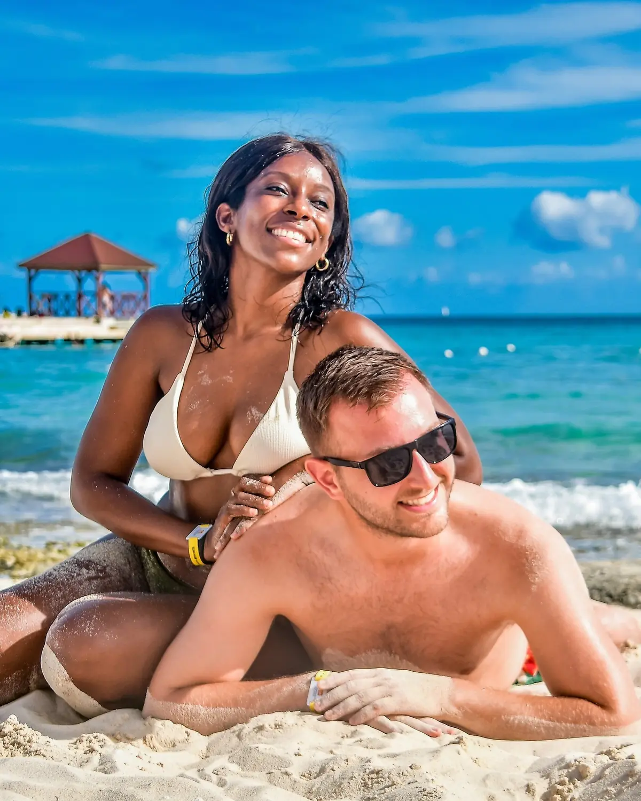

Our beginning01
The Punta Cana & Bávaro beaches
📍 Punta Cana / Bávaro, the east coast
This is where our story began, so it will always be our favourite stretch of coast in the country. The beaches here are the postcard the DR is famous for — soft white sand, leaning coconut palms and calm, bath-warm water held back by the reef. It's the easy, do-nothing side of the island, and the perfect base for the day trips below. Beyond the sand, two of our favourite ways to spend a day are getting out into the countryside on a buggy and out on the water on a boat.
Calm, swimmable waterBest excursion base
GetYourGuide
We'd recommend
Punta Cana: Buggy, ATV or Kayo Tour with Cenote Swim
Check availability →
GetYourGuide
We'd recommend